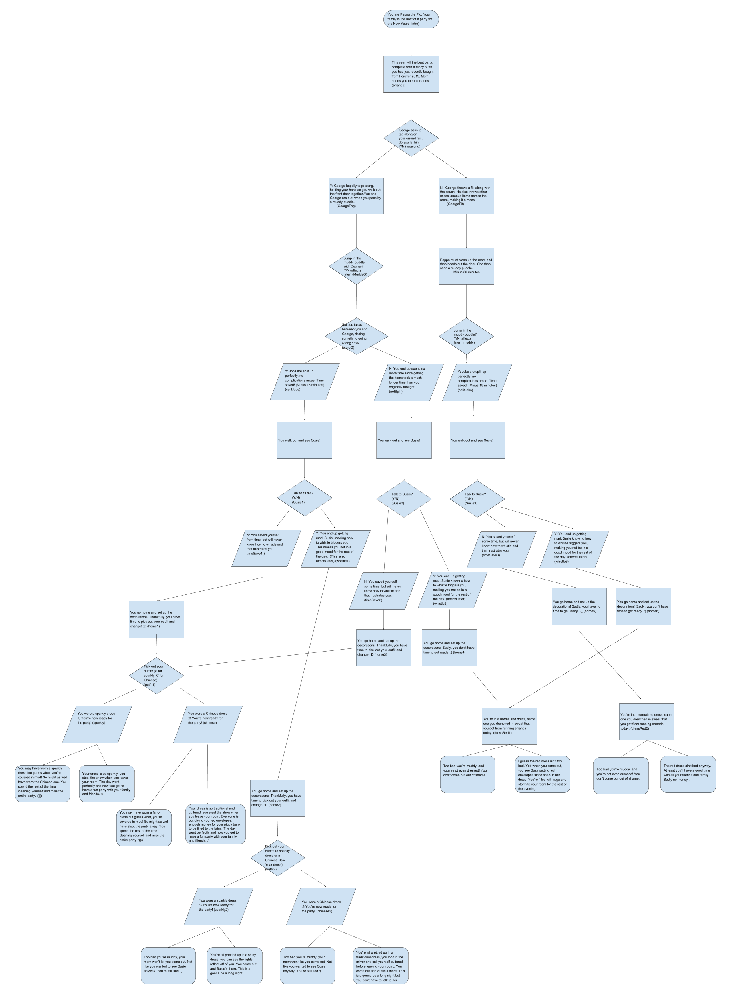

(My Portfolio)
Undertale Rewritten
Click Here to Try The Game Out!
(description)
Undertale Rewritten is a spin on the tutorial at the beginning of the game
Undertale, where you first meet a character named Flowey. Instead of proceeding forward
with the game's story, players instead are met with a game of dodging these "friendliness pellets."
In this game, the more "friendliness pellets" you dodge, the more points you earn! The use of randomness
occurs during the fight with Flowey, where a random amount "friendliness pellets" are shot at you in random
places. The longer you survive, the more "friendliness pellets" are shot at you. There's even an easter egg if
you pass a certain score!
(reflection)
Both my partner (Lawrence) and I are big fans of the game Undertale. So, we
wanted to create a game that was playable on Scratch. Though there were some already
made, we decided to use ideas from both the original game and put some new things in it!
Two successful points in the development of our game was how we were able to find these sprites
online which made this much easier to do. Another point is how we were able to find time to both work
on these separately in order to add all the elements we wanted into it. Two obstacles that we faced
while working on this game was the creation of the circle and getting the songs to stop and play at the
times we wanted it to. The creation of the circle required us mapping out almost 60 points by hand and
inserting all these points in one by one. The next part included cloning the pellets to these 60 points
and having them gradually come towards the heart. Songs became an issue as well; often times, we created new
broadcasts in order for these songs to work properly and stop properly. This also taught us when to use which
block for a sound to work a certain way. If we had more time to work on this game, we would've created the sprites
ourselves for a game that's much more unique and showcases our personality.
This is one of our most important algorithms that helped with the randomness of the "friendliness pellets." Without this,
the game wouldn't get hard past a certain score as well. By cloning this one pellet and having it targeted in random spots,
this is what made our game fun since players would have a hard time trying to dodge so many bullets at one time. This algorithm,
depending on what you do and where it's launch determines the difficulty and when you lost the game so it knows when to stop the pellets.
This is our use of the "more blocks" to create our circle of "friendliness pellets" that surround the player when they lose the
game by failing to dodge these "friendliness pellets." As you can see, there were a lot of points that went into the circle (it
still continues past this screenshot!)
Peppa Pig: Year of The Pig
(summary)
Join Peppa on her adventure to make her party this year the best one!
You are Peppa and your goal in the story is to finish the tasks your mummy
has given you in order to help her out with the party. Make a mistake and
chances that you might not be able to attend the party will increase! Do
the right things and you are able to fully enjoy the party with everyone!
(flowchart)
(questions)
The incremental and iterative process of the story started with
the planning of the story, establishing a base to later fill in with
more in-depth scenes. There was a lot of back and fourth in what I wanted
the endings to be, and I opted for multiple endings that were affected by something
that you did earlier in the story. In order to test if the endings were right and
the routes were working properly, I went through each route and made sure
that even if I put in other letters into the program, it would've still worked.
There were endings that didn't work since the program didn't check if the
player did a certain route and gave them an ending that did make sense, however,
there was secret endings the player could've gone through. By simply trying different
things, I was able to assess the problem and make so the endings actually worked.
The repetition of checking every route and making sure they end up at the right
endings allowed me to make sure that everything worked out smoothly and that
the program would end up working. Organizing my scenes into functions is a form of
procedural abstraction is that I know how I want my story to go, yet I don't know
how that happens. If I want something to happen, I would try different methods in order
order to get there and try different things. Starting with defining the function,
I give a name to the function, followed by what I want the function to do for an input.
I know what I want to do, yet I don't know how it works. A story that I read when I was
younger that I enjoyed was Cinder, which took my childhood stories and gave a twisted ending
and different style to it, which I enjoyed.